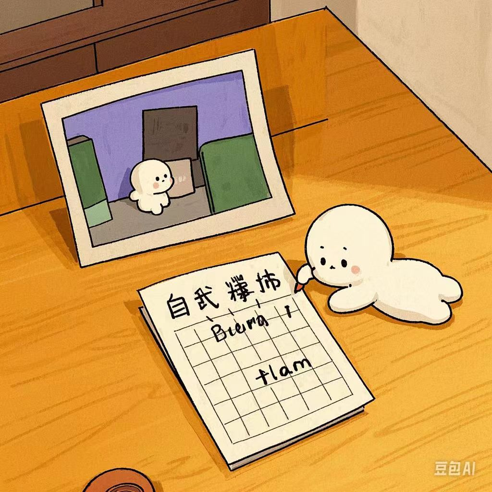

1.责任心强：对待工作和生活中的任务，始终认真负责，尽力做到最好。无论是工作中的项目还是生活中的琐事，都会全力以赴地去完成，不敷衍塞责。
2.学习能力强：对新事物充满好奇心，能够快速掌握新知识和技能。通过不断学习，提升自己的综合素质，适应不同的环境和挑战。
3.善于沟通：能够与不同性格的人进行有效的沟通，倾听他人的意见和建议，表达自己的观点和想法。在团队合作中，能够协调各方，达成共同的目标。
4.有团队精神：懂得协作的重要性，积极参与团队活动，为团队的发展贡献自己的力量。尊重他人的意见和贡献，善于发挥团队成员的优势，共同完成任务。
